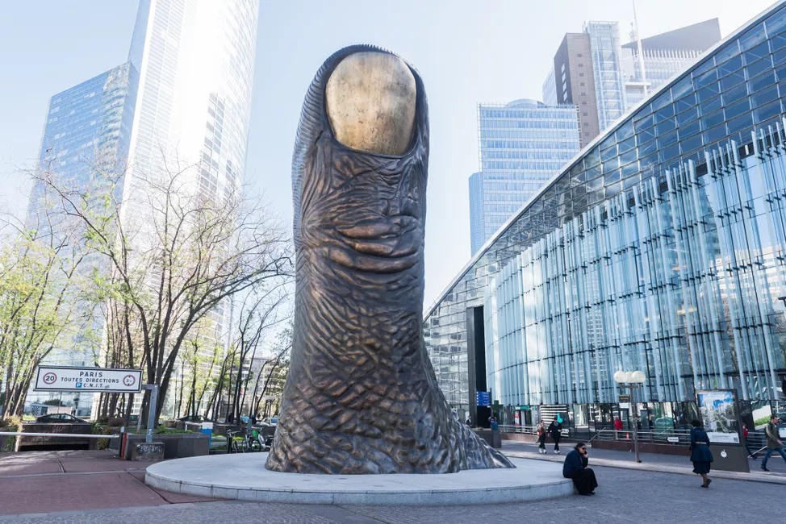
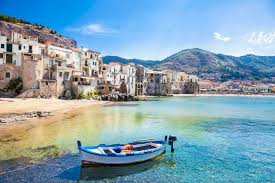

J'me présente, je m'appelle...(pas Henri), mais Pierre BARBERIS
Bonjour à vous chers lecteurs, mon nom comme vous l'aurez peût etre deviné est Pierre Barberis, j'ai 18 ans et je vis dans la plus belle ville du monde...Paris. J'étudie actuellement à L'EMLV, L'école de Managment Léonard de Vinci, d'ailleurs, si vous voulez en savoir plus sur cette école, regardez ci-dessous
Découvrez mon école juste ici!Le Football ⚽
Je suis passionné de Football depuis que je suis petit, j'habite à Paris donc comme vous l'aurez peut etre devniné, je supporte le Paris Saint Germain.
Mon joueur préféré est Presnel Kimpembe, c'est un joueur Francais né en Ile de France et qui représente bien le club. Il porte le numéro 3 et évolue au poste de défenseur. Il ressemble à cela 👇 🔴🔵
Les Voitures 🚗
Depuis que je suis petit, j'ai une passion pour les voitures de tout genre. Cepndant, j'ai une préférence pour les voitures anciennes car je trouve qu'ells ont un charme en plus.
En janvier de cette année, j'ai eu mon permis de conduire. De plus, j'ai eu 18 ans cette année, et pour feter cela j'ai décidé d'acheter pour mes 18 ans ma propre voiture.
C'est une 206cc de 2006 éidition Quicksilver. C'est idéal pour frimer quand il fait beau!! 🌞
J'adore aussi voyager avec ma famille 👪
Voici quelques destinations où je suis déjà allé...
...Barcelone :

Une ville où il fit bon vivre et où il fait presque toujours chaud et beau, cela change de Paris. 😅😅
...La Défense (non non ce n'est pas New York) :

J'ai beaucoup aprécié cette ville malgré le monde. On y trouve des monuments/rues mythiques comme..
La statue de la Liberté :

Ou le pouce de César :

...La Sicile

Une très belle ile mediterraneenne bordée par la mer où les habitants sont très accueillants. Attention, il y a quand meme plus de chats sauvages que d'habitants!! 🤣🤣